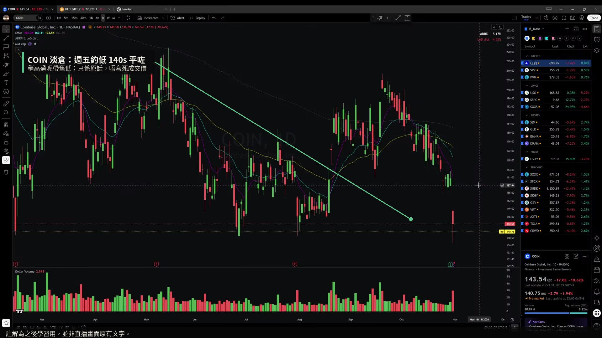
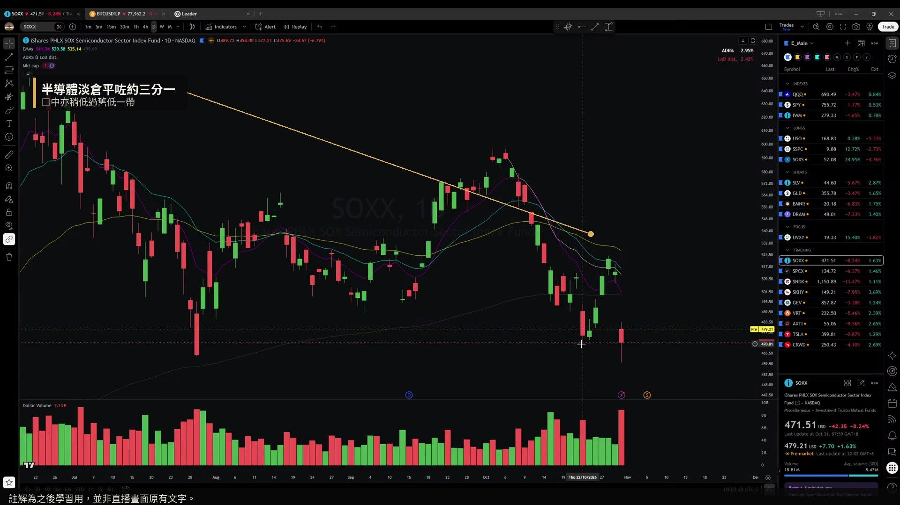
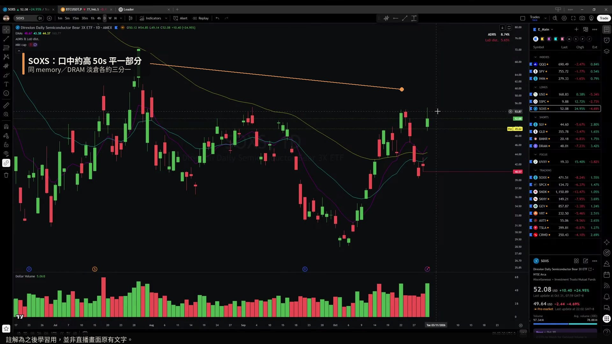

概要
接近舊低就平一部分，而唔係等均線
有人問淡倉點樣獲利。佢舉週五：COIN 淡倉大約在低 140s、稍高過呢帶舊低平咗；半導體淡倉亦平咗約三分一，口中都係稍低過舊低一帶；memory short 同樣平約三分一。講半導體時畫面先後出現 SOXX 同 SOXS，SOXS 當時約高 50s。呢啲都係原話裡嘅大約位置，畫面睇唔到成交單，本站唔寫死成交價。
圖一 · 主圖
COIN：約低 140s、稍高過舊低平咗
直播 50:27

原話
Yes. So on Friday I did close my Coin short at around 140, low 140s, on slightly above this swing lows. And I did close one-third of my semi short, also I think slightly under this swing lows too. I think high 50s on this SOXS, and also one-third on the memory short here.
係。所以週五我把 Coin 淡倉平咗，大約在 140、低 140s，稍高過呢帶舊低。半導體淡倉我亦平咗三分一，都係稍低過呢帶舊低。SOXS 我記得係高 50s，memory short 都平咗三分一。
YouTube 把 SOXS 聽成 “so excess”、“high 50 freeze”。畫面隨後切到 SOXS，收市約 52。memory short 稍後以 DRAM 一科詳細拆。
點樣讀
淡倉獲利嘅做法，呢度係靠近舊低就平一部分，而唔係等到某條均線。數字全部係口中大約位置。
圖二
半導體淡倉平咗約三分一
直播 50:40

原話
And I did close one-third of my of the semi short, also I think slightly under this swing lows too.
半導體淡倉我亦平咗三分一，都係稍低過呢帶舊低。
點樣讀
SOXX 用來對「半導體淡倉」同舊低。具體執行有部分係 SOXS，見下圖。
圖三
SOXS：口中約高 50s 平一部分
直播 50:50

原話
I think high 50s on this SOXS, and also one-third on the memory short here.
SOXS 我記得係高 50s，memory short 都平咗三分一。
點樣讀
「三分一」只係原話裡嘅約數，唔當成可複製嘅倉位規則。
附註
注意事項
- 所有價位同比例都只係原話，畫面冇成交單，本站唔寫死。
- YouTube 把 SOXS 聽錯；本站按畫面更正。